Aperçu
Ce guide vous accompagne dans l'utilisation de la plateforme COCOBEACH, votre outil de gestion d'événements et de réservations. Vous apprendrez à gérer vos événements, packages, réservations et utilisateurs de manière simple et efficace.
Connexion à la plateforme
L’accès à la plateforme d’administration se fait via un navigateur web. Voici les étapes à suivre pour se connecter :
-
Ouvrez votre navigateur (Google Chrome, Firefox, Edge, etc.) ;
-
Saisissez l’URL suivante : « https://cocobeach.kaeyros.org/login » ;
-
Renseignez les identifiants fournis lors de la souscription au service (adresse e-mail et mot de passe) ;
-
Cliquez sur « Connexion » pour accéder à votre espace.
En cas d’oubli de mot de passe, veuillez nous cliquer sur le bouton Forgot password et entrer votre email.
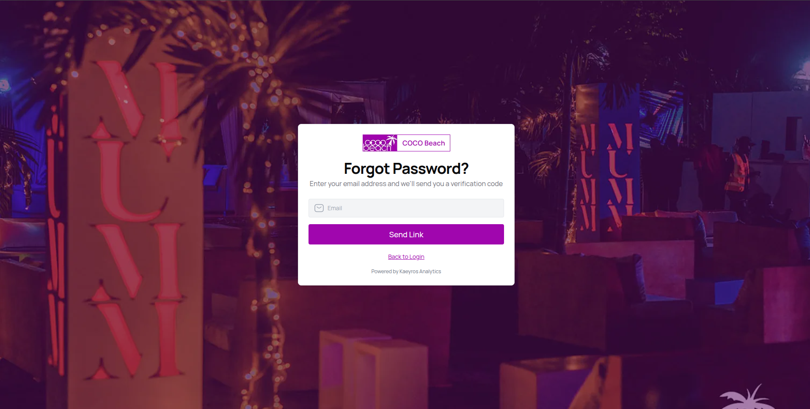Une fois que c'est fait, un mail sera envoyé à l'adresse renseignée. En suite il faut ouvrir le mail reçu et cliquer sur le bouton Changer le mot de passe l'interface suivante s'ouvrira et la vous entrez le nouveau mot de passe et vous le confirmez
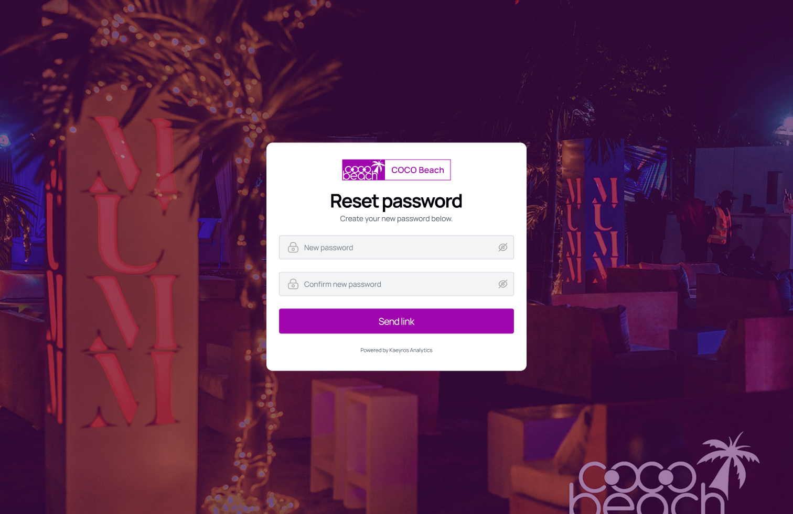Une fois connecté, vous aurez un accès direct au dashboard de l'application.
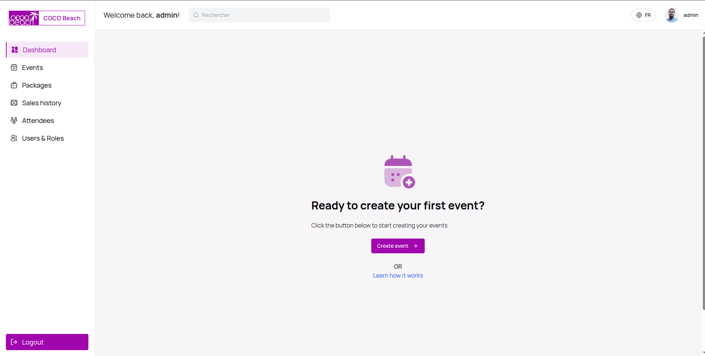Events
Une fois sur l'onglet Events, vous pouvez :
-
Visualiser les évènements déjà crées,
Créer un évènement,
Télécharger le rapport des évènements,
Mettre à jour un évènement ou le supprimer
1. Visualisation les évènements déjà crées
Cette fonctionnalité permet de consulter rapidement la liste des évènements.
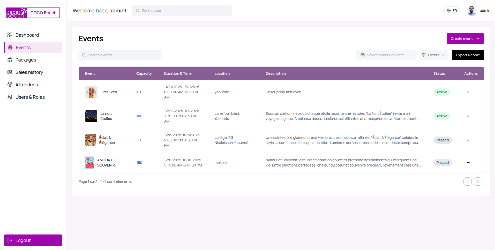2. Créer un évènement
Cette fonctionnalité permet de créer un évènement.
-
Cliquez sur le bouton Create event.
-
Dans la boîte de dialogue, il ya les différentes informations à renseigner pour créer un évènement. Puis cliquez sur Create event pour enregistrer l'évènement, elle sera immédiatement affichée dans le tableau.
3. Téléchargement du rapport des évènements
Cette option permet d’exporter le rapport des évènements sous forme de fichier Excel ou CSV.
-
Sélectionnez le jour pour lequel vous souhaitez obtenir le rapport.
-
Cliquez sur le bouton Export Report et selectionnez le format de fichier souhaité entre Excel et CSV.
-
Le fichier Excel ou CSV regroupant tous les évènements pour la date sélectionnée sera téléchargé automatiquement, prêt à être consulté ou analysé.
4. Mise à jour/Suppression d'un évènement
Cette fonctionnalité permet de mettre à jour/supprimer un évènement.
Lorsque vous cliquez sur le bouton Update vous avez la modal de l'image suivant pour modifier l'event selectionné
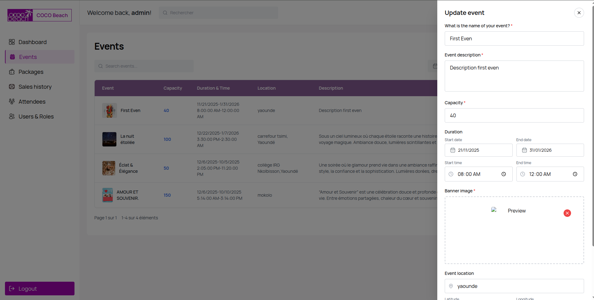Lorsque vous cliquez sur le bouton Delete vous avez la modal de l'image suivant pour supprimer l'event selectionné
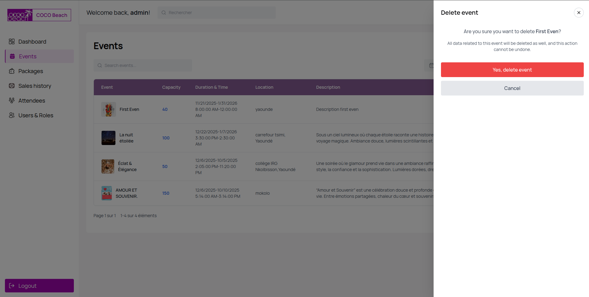Gestion des packages
Il faut cliquer sur l'onglet packages pour accéder à cette partie. Il est question de créer les packages pour un évènement en particulier.
Une fois sur l'onglet packages, vous pouvez :
-
Visualiser les packages déjà crées,
Créer un package,
Télécharger le rapport des packages,
Mettre à jour un package ou le supprimer
1. Visualisation les packages déjà crées
Cette fonctionnalité permet de consulter rapidement la liste des packages.
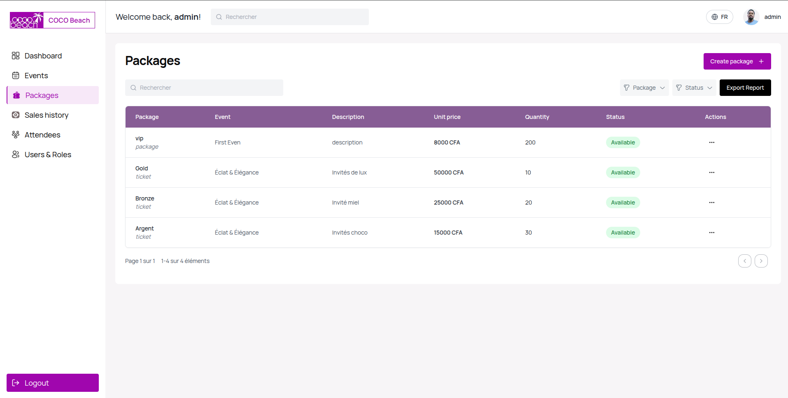2. Créer un évènement
Cette fonctionnalité permet de créer un package.
-
Cliquez sur le bouton Create package.

-
Dans la boîte de dialogue, il ya les différentes informations à renseigner pour créer un package. Puis cliquez sur Create package pour enregistrer le package, il sera immédiatement affichée dans le tableau.
3. Téléchargement du rapport des packages
Cette option permet d’exporter le rapport des packages sous forme de fichier Excel ou CSV.
-
Sélectionnez le jour pour lequel vous souhaitez obtenir le rapport.
-
Cliquez sur le bouton Export Report et selectionnez le format de fichier souhaité entre Excel et CSV.
-
Le fichier Excel ou CSV regroupant tous les packages pour la date sélectionnée sera téléchargé automatiquement, prêt à être consulté ou analysé.
4. Mise à jour/Suppression d'un package
Cette fonctionnalité permet de mettre à jour/supprimer un package.
Lorsque vous cliquez sur le bouton Update vous avez la modal de l'image suivant pour modifier le package selectionné
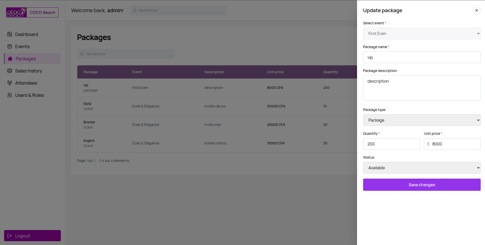Lorsque vous cliquez sur le bouton Delete vous avez la modal de l'image suivant pour supprimer le package selectionné
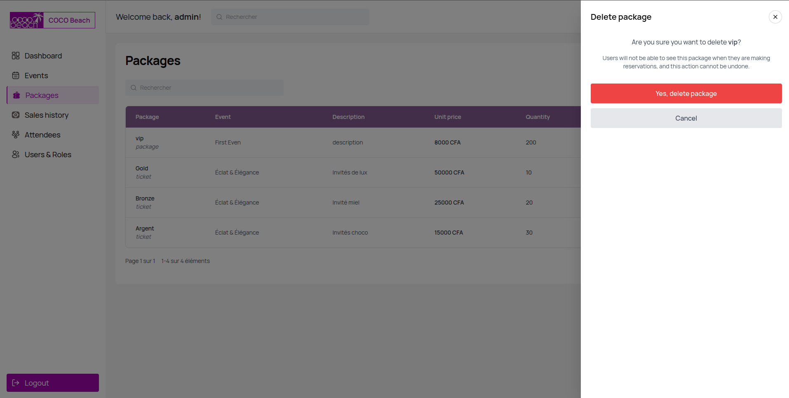Visualisation de l'historique de reservation
Depuis l’onglet Sales history, permet de visualiser l'historique de ventes effectuees
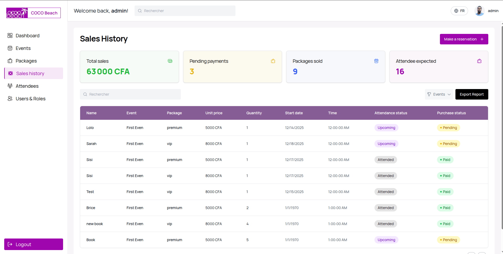Téléchargement du rapport de l'historique de ventes
Cette option permet d’exporter le rapport de l'historique de ventes sous forme de fichier Excel ou CSV.
-
Sélectionnez le jour pour lequel vous souhaitez obtenir le rapport.
-
Cliquez sur le bouton Export Report et selectionnez le format de fichier souhaité entre Excel et CSV.
-
Le fichier Excel ou CSV regroupant l'historique de ventes pour la date sélectionnée sera téléchargé automatiquement, prêt à être consulté ou analysé.
Gestion des réservations
Elle se fait dans l’onglet Attendees.
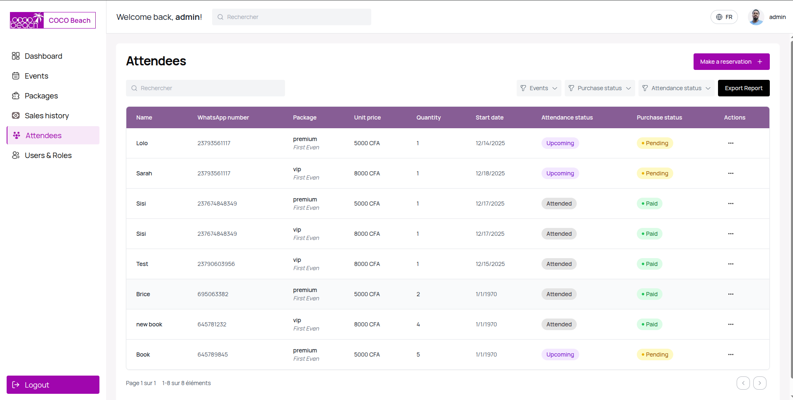Sur cette section, il y a les fonctionnalités suivantes:
-
Créer une réservation
Annuler une réservation
Valider une réservation
Télécharger le rapport des réservation
1. Création d'une réservation
Cette fonctionnalité vous permet de créer une nouvelle réservation.
En cliquant sur le bouton Make a reservation, une boîte de dialogue va s’ouvrir et vous devez renseigner les informations de la réservation que vous voulez ajouter à ce niveau.
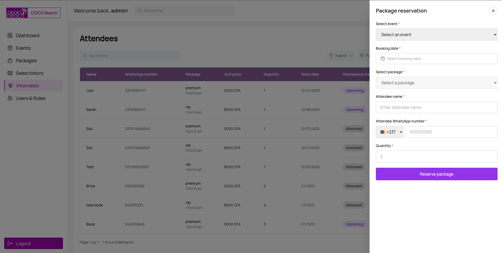2. Annulation d'une réservation.
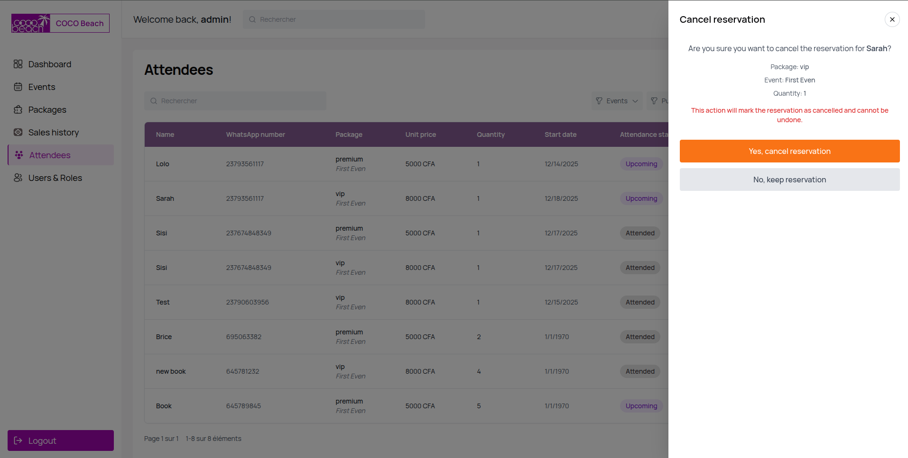Cette modal permet d'Annuler la réservation selectionnée.
3. Validation d'une réservation
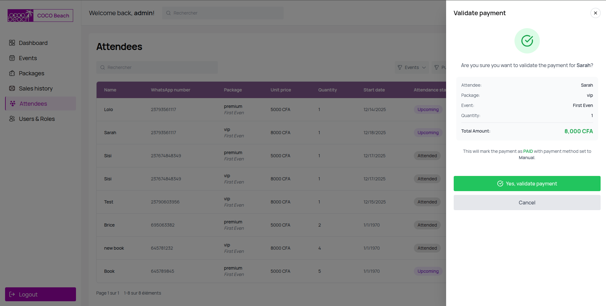Cette modal permet de valider la réservation selectionnée.
4. Téléchargement du rapport de réservation
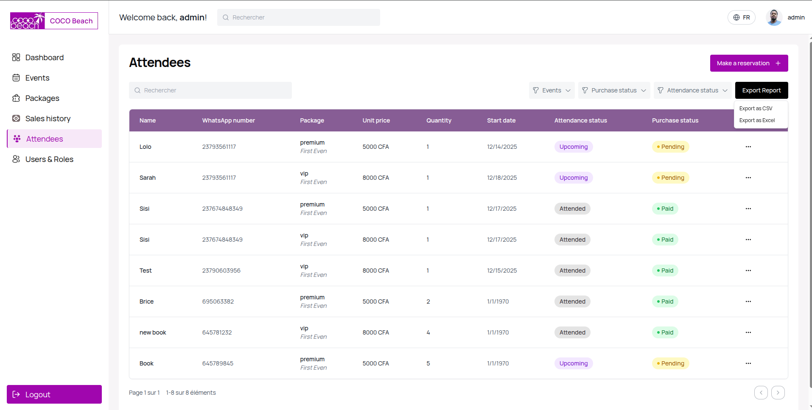-
Sélectionnez le jour pour lequel vous souhaitez obtenir le rapport.
-
Cliquez sur le bouton Export Report et selectionnez le format de fichier souhaité entre Excel et CSV.
-
Le fichier Excel ou CSV regroupant les réservations pour la date sélectionnée sera téléchargé automatiquement, prêt à être consulté ou analysé.
Gestion des utilisateurs
Elle se fait dans l’onglet Users&Roles.
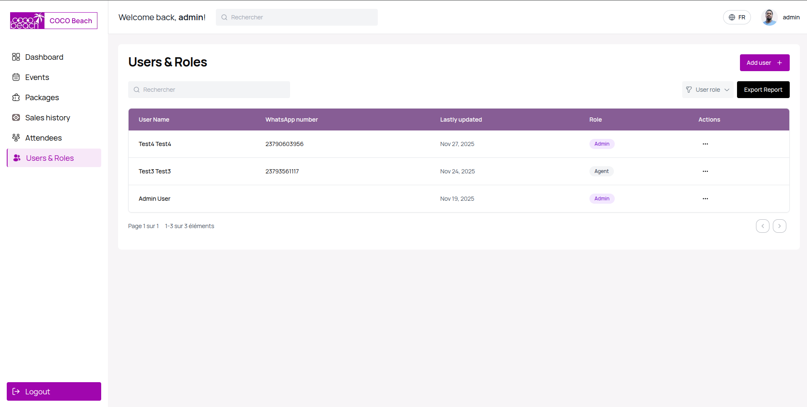Sur cette section, il y a les fonctionnalités suivantes:
-
créer un utilisateur
Modifier les informations d'un utilisateur
Ajouter un role a un utilisateur
Retirer un role a un utilisateur
télécharger le rapport des réservation
1. Création d'un utilisateur
Cette fonctionnalité vous permet de créer un nouvel utilisateur.
En cliquant sur le bouton Add user, une boîte de dialogue va s’ouvrir et vous devez renseigner les informations de l' utilisateur que vous voulez ajouter à ce niveau.
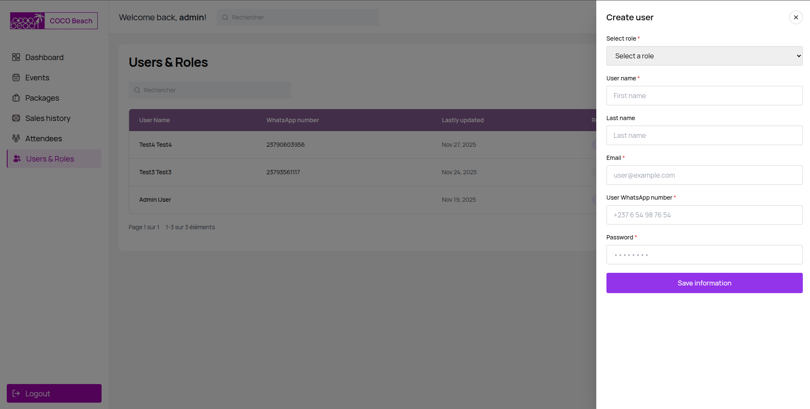2. Modifier un utilisateur.
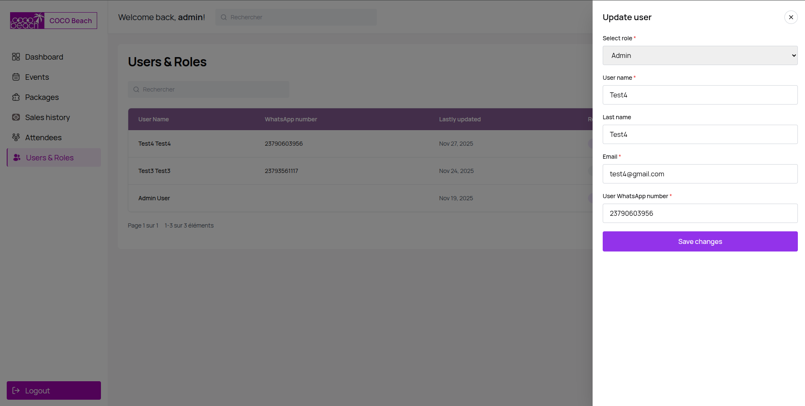Cette modal permet de modifier les informations d' un utilisateur selectionné.
3. Ajout d'un role a un utilisateur.
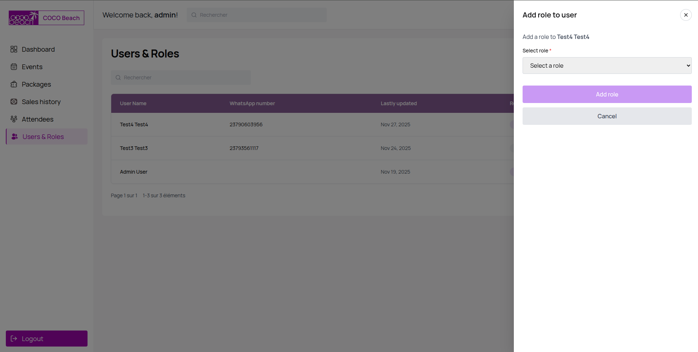Cette modal permet d'attribuer un role a l'utilisateur selectionné.
4. Retrait d'un role a un utilisateur
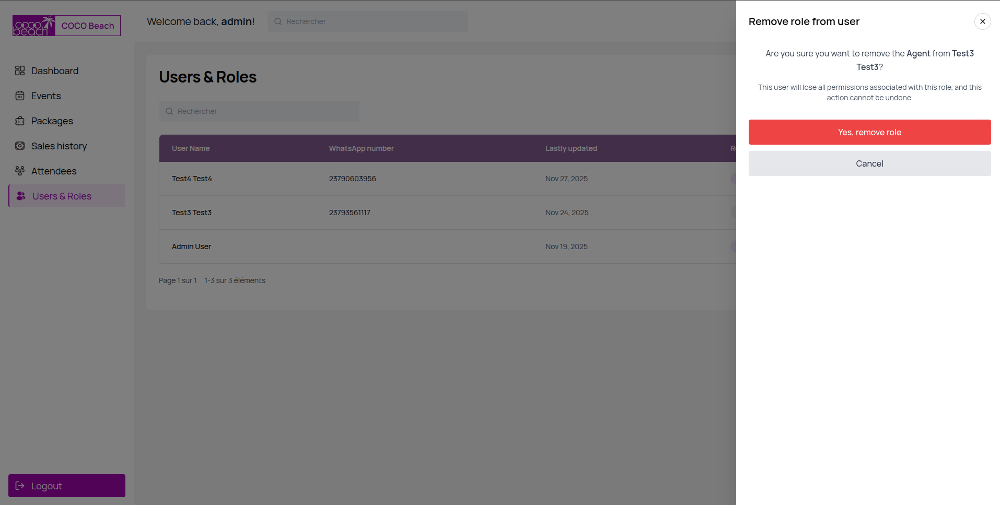Cette modal permet de retirer le role attribue a l'utilisateur selectionné.
5. Téléchargement de la liste des utilisateurs
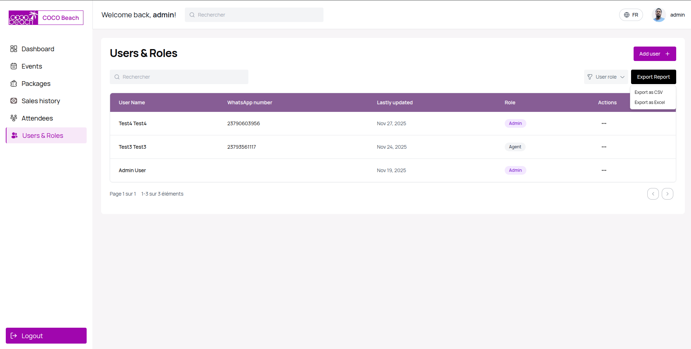-
Cliquez sur le bouton Export Report et selectionnez le format de fichier souhaité entre Excel et CSV.
-
Le fichier Excel ou CSV regroupant les utilisateurs sera téléchargé automatiquement, prêt à être consulté.